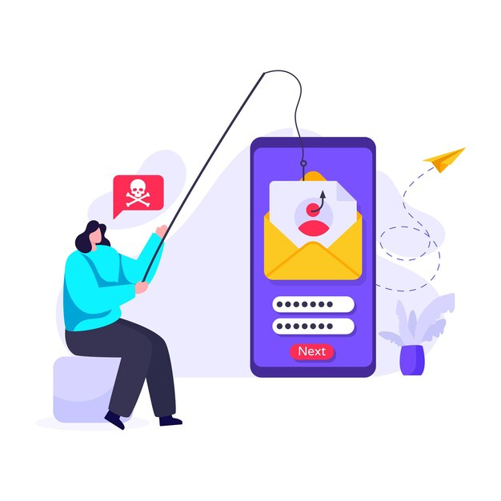

Apa itu Identity Theft?
Identity theft atau pencurian identitas adalah kejahatan yang dilakukan dengan menyalahgunakan identitas orang lain untuk memperoleh keuntungan.
Kejahatan dengan mengatasnamakan orang lain ini terjadi ketika pelaku menggunakan informasi pribadi seseorang, seperti nama, identitas kependudukan, nomor kartu kredit, dan lainnya tanpa ada persetujuan.
Beberapa teknik yang digunakan untuk mencuri identitas atau data keaungan yaitu sebagai berikut.
- Phishing - memancing email untuk informasi pribadi dan keuangan yang disamarkan sebagai email bisnis yang sah
- Pharming - situs Web palsu yang mencari informasi pribadi dan keuangan dengan menanam URL palsu di Server Nama Domain
- Resume online dan situs pencarian pekerjaan dapat mengungkapkan SSN, riwayat pekerjaan, tanggal lahir, dan informasi lain yang dapat digunakan dalam pencurian identitas
Melindungi Diri dari Identity Theft
Ada beberapa cara yang dapat membantu melindungi diri dari pencurian data identitas atau penyalahgunaan kartu kredit.
{{p.title }}
{{ p.content }}
Deteksi Email Phising
Berikut beberapa cara untuk mengidentifikasi apakah email yang anda terima adalah email phising
